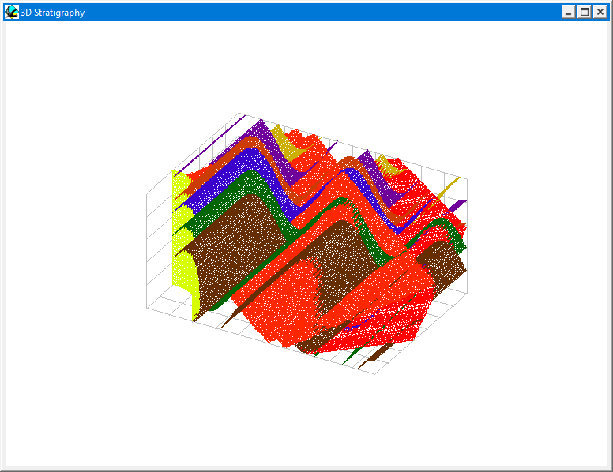

3D triangulation
A 3D triangulated surface model of the geology can be viewed by choosing 3D Layer from the Geology menu, and displays a wire-frame view of the geometry of one or more stratigraphic, fault, unconformity or igneous contacts within the bounds of the current block diagram.
The model may be rotated by dragging the mouse in the window, and rescaled by holding the shift key down and dragging the mouse.
The triangulation may be saved out to file by changing the destination of calculation via the 3D View Options window.

Noddy · open source under the MIT licence · Loop3D/noddy_qt